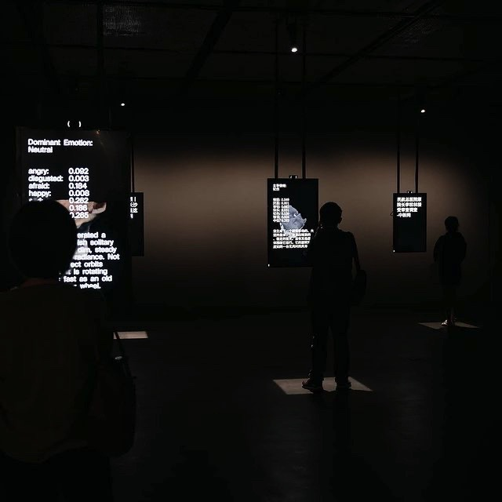
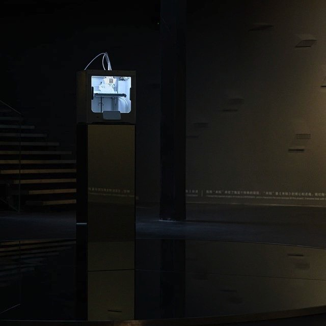
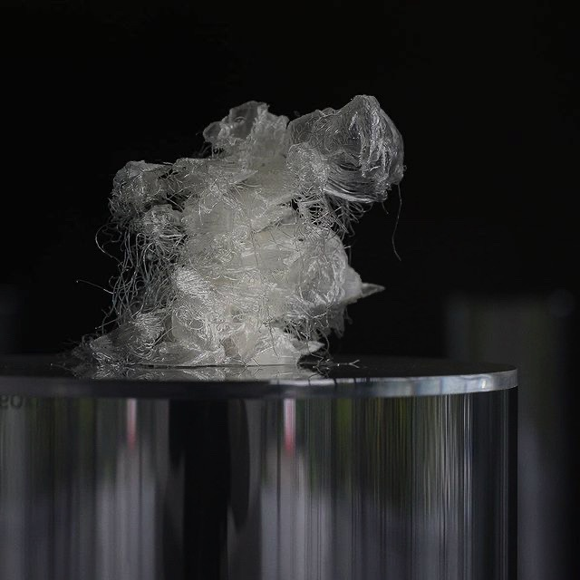
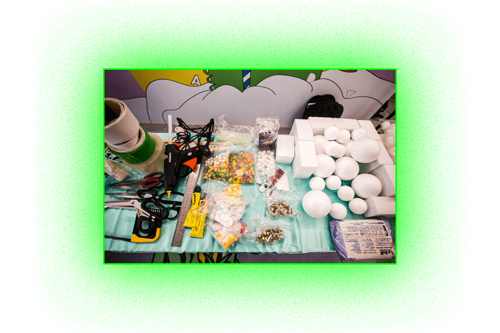
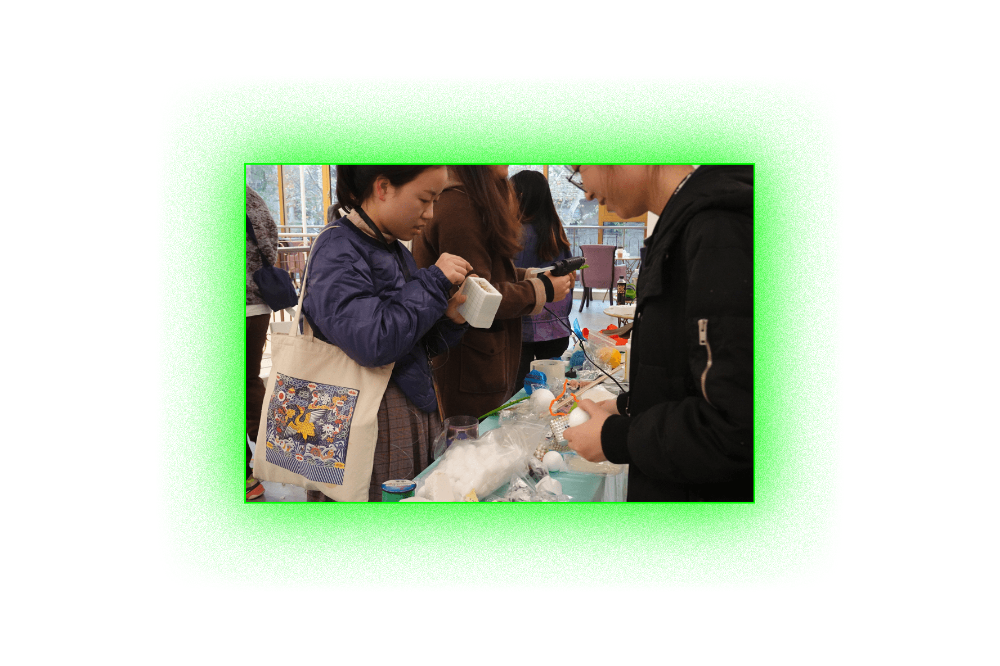
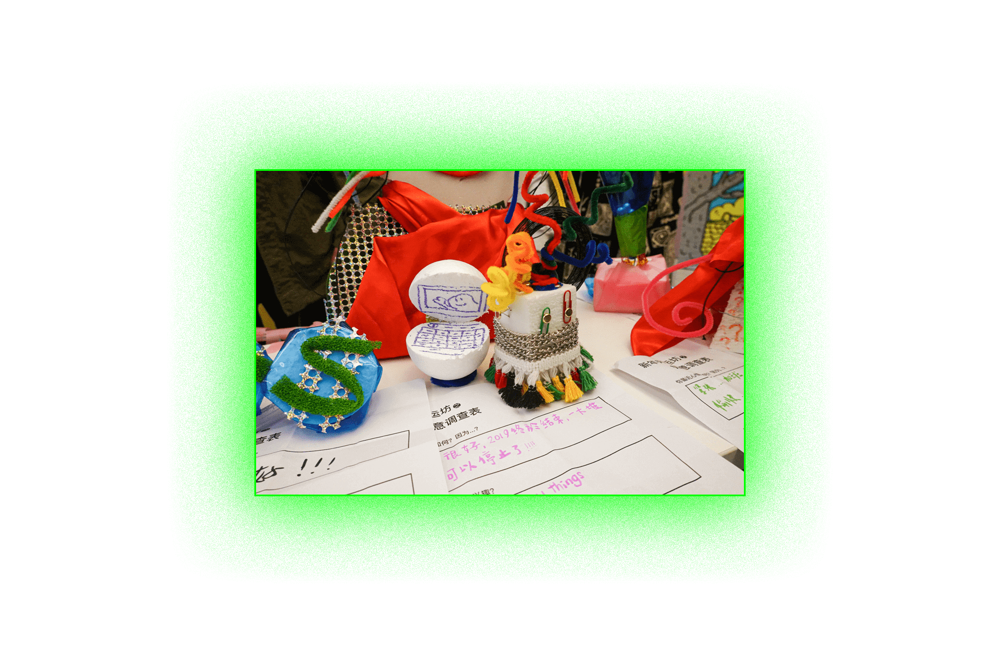
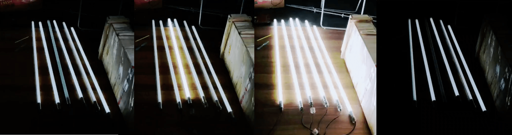
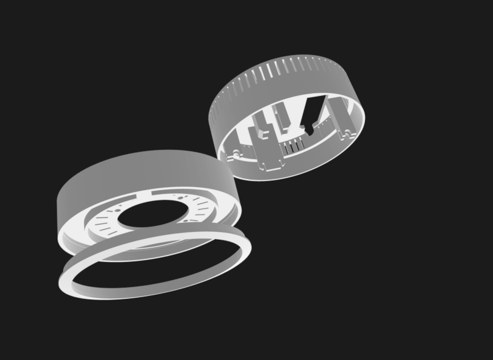
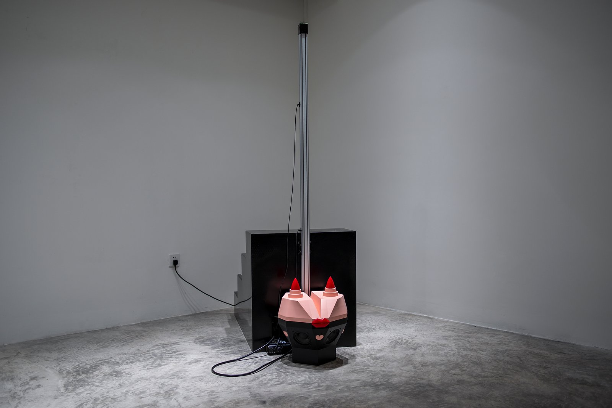

UNKNOWN by YIN Xiuzhen
UNKNOWN transforms the exigencies of world affairs and flux of
emotions into constellations of heavenly bodies, in which fleeting human presences catalyze and
transpire a universe of ephemerality and uncertainty.
UNKNOWN by YIN Xiuzhen is the third iteration of the A&T@ Program initiated at Chronus Art Center, and
another notable outcome of continued collaborations between ZHI and CAC.
My role in the team is assisting production of the exhibition from beginning to the end and designing
the physical parts.




Hyper Personal Produce Workshop
In the workshop each participant are turned into a problem solver for the other individiul. The workshop
is design to get
citizen's agency back from Deigners and Markets, also give people access to tool for creating. In this
workshop, we are managed to escape the
mass-produced, one-size-fits-all products, but design a product for one individual, and ideally, for
only THE individual.
The workshops were conducted in collaboration with the HIVELABS at the Shanghai West Bund Museum's
FutureLab 2019 as well as in the Shanghai Theatre Center.
The workshops were hosted by me when I was in MorrowAgent studio.



+86 166 1233 5721
The paint-like installation will flash and have wired noise when there’s someone calls the number, i.e.
the title.
It is consisted of an electromagnetic sensor, a some lights, speakers, a relay and a cell phone. The
signal received by the sensor will be converted into an audio signal to the speakers, which will also
control the relay to turn on to a high voltage. Therefore the light will flash with the sound. When a
call is made to the phone, the noise emitted becomes louder and the lamp flicker becomes more violent
due to the enhanced electromagnetic wave. People from all over the world can call "harassment" as long
as they know the phone number.
This is an work of artist Aiwu, I was responsible for electronic hardwares design, programing and the
design and production of the frame.


lights test
WeLeakToo
Weleaktoo is a smart voice assistant by Leon Eckert and Vytas Jankauskas for WeLink2:Sideways exhibition
at Chronus Art Center. I helped to design the physical object.
Aside from listening to voice commands, the device also 'listens' for unencrypted network communications
from other artworks in the exhibition.
Text-based information is spoken aloud, whereas all of the intercepted content is reappropriated on a
dedicated website weleaktoo.com
©project description by Vytas.
©first pic by Leon.

Romance
The linear guide drives the sculpture slowly up, when it reaches the top, it will suddenly fall, with a
loud gunshot sound.
This is an work of artist Aiwu, I was responsible for electronic hardwares design, programing and the
design and production of the base.

Landing welcomer
This ia an installtion for the band Peach illusion's art music tour.
I made everything.
The most fun part of the installation is an interaction telephone. I hacked a regular telephone. When
picked up, it will randomly play a piece of the musicians' pre-recorded monolog.
Emotion ownership
This is a design fiction about the future of emotional biosensing, affective computing and emotion
ownership.
Inspired by Noura Howell et al.
Emotional
Biosensing: Exploring Critical Alternatives.
When all the emotions are identified, tracked and “accurately” represented, who would be the owner
of
emotions?
Retrospectly, this story is very simplistic, but I still feel that what are happening in this story are
gradually happening in real life, for example, Spotify's emotion based playlist recommendation.
--01.2021

In 2042, a perfect emotion model has been found, with 100% accurate and computable, 0 ambiguity.

With emotions being transparent, it prevents suicide effectively.

Emotion Stability is regarded more “official” than age. Most events require ES 200&up rather than age over 21 any more.

It's an era of IoE(Internet of Emotions). Emotion sensitive technology have daily objects, including the brightness of your lamp, the music style of your playlist, the selfie filters, the color of your shirts and nails, connect to your emotion center, and are designed to be real-time responsive. Also you can share all your “tangible” emotions with your friends.

With the example of shirts, …

When shirt’s color changes are regarded as social responses, people get more sincere than
ever.
But awkward situations can happen, when your shirt is saying the opposite of what you are
saying, which
one do
you believe? yourself or your shirt? which one does your friend believe?
To avoid this awkwardness…

you, as well as thousands of others, have to take the emotion control course.
The course doesn’t only teach you how to control your emotions, but how to keep up with your
shirt
responses!
And finally…


This [div] intentionally left blank.